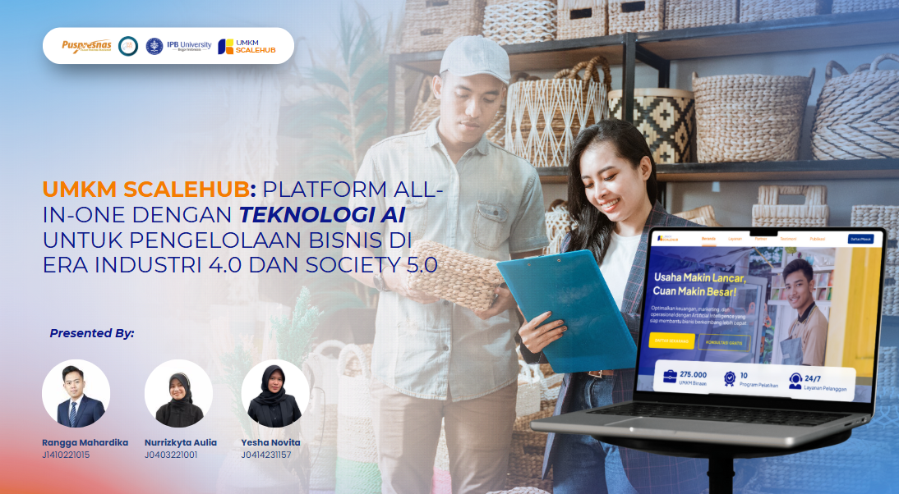

Role: UI/UX Designer
Timeline: Jan – Feb 2023
Insight:
UMKMScaleHub is a prototype platform designed to support Indonesian micro, small, and medium enterprises (UMKMs) in growing their businesses by improving access to learning materials, business resources, and community support. This project focused on building a simple, mobile-friendly interface that meets the needs of small business owners who may have limited digital experience.
Challenges & Solutions:
- Digital Literacy Barriers: Many UMKM owners have limited digital experience. I designed a progressive onboarding system with interactive tutorials that adapts to the user's comfort level with technology, gradually introducing more advanced features.
- Complex Resource Navigation: The platform needed to organize diverse resources (funding, mentorship, training, market access). I created an intuitive categorization system with visual cues and implemented a personalized recommendation engine based on business type and goals.
- Mobile-First Necessity: Most users would access the platform via smartphones. I developed a responsive design that prioritized essential functions on small screens while maintaining full functionality across all devices.
- Cultural Relevance: The design needed to resonate with Indonesian business owners. I incorporated cultural design elements and conducted usability testing with actual UMKM owners to ensure the interface felt familiar and trustworthy.
Impact:
- Helped me better understand how to design for accessibility and inclusion, especially for users with minimal digital exposure.
- This project strengthened my understanding of designing for users with varying digital literacy levels and creating interfaces that bridge technological divides.